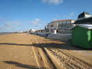
Chatelaillon. Je n'y étais pas venu l'an dernier cause coïncidence avec Berck. Cette année, le paysage a bien changé ! Avec le vent fort et la mer, le sable a remonté la plage de 20 cm et il mord maintenant sur la promenade basse, et même sur la partie haute : les voitures roulent sur le sable !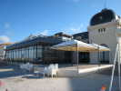
Le Casino s'est aussi modernisé, une verrue métallique s'étant greffée sur la belle façade classique (permettant d'avoir une grande salle interne dédiée aux bandits manchots...). Mais bon, en elle-même, elle n'est pas trop mal.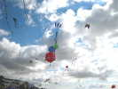
La météo a promis un week-end exécrable, mais samedi matin, il fait beau, avec quand même 30 km/h de vent ! Comme on s'attend à pire, il y a pas mal de monde en l'air dès le matin, même si l'ouverture officielle est à 14 h !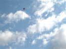
Il ne manquera pas d'aérophotographes ce week-end, dont celui-ci qui utilise un porteur rarement employé : un carré à longue queue, qui est effectivement très stable.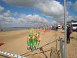
Fernando a déjà monté dans l'espace "Jardiniers du Vent" une partie de ses cactus qui tournent à grande vitesse dans le vent chatelaillien.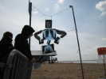
Des radios reconstituent (en transparence) un malheureux patient écartelé, de sexe indéterminé...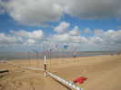
Les éoliennes de Mark et Nihkoel tournent à plein sur leurs moyeux de rollers...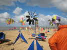
Joël a monté ses moulinets classiques (Vive le vent...!) mais aussi de nouveaux (mais inaugurés à Coulaines) qui font circuler des boules multicolores sur des chemins de formes variées. La finition et le mouvement sont toujours impeccablement réalisés, en fil d'acier soudé principalement.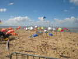
La Suisse a amené ses poissons, auxquels elle a ajouté cette année de solides poissons-lunes argentés.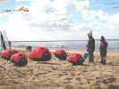
J'ai joint ma Cox gagnée à Cayeux à celles de Vent de Folie. Les enfants sont très attirés par ces bébêtes sautillantes, mais n'osent pas toujours trop s'approcher...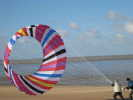
Dominique et ses copains ont créé un bol de belle surface qui monte bien haut...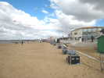
Il est 11 h du matin, mais les projos du vol de nuit sont déjà en place et allumés ! On sent l'importance de la manip pour le festival...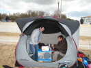
Les L'Higuinen ont acheté une nouvelle tente clic-clac de belle taille, mais aussi rapide à monter, un peu moins à démonter. Elle est spacieuse et pratique, avec ses parois quasi-verticales qui permettent de se tenir debout. Il faut par contre bien l'ancrer, elle a de la prise au vent !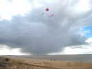
De temps en temps passe un grain comme celui-ci, avec éventuellement une petite averse de grêle, mais dans l'ensemble, on n'aura pas trop à se plaindre, ça ne dure pas longtemps...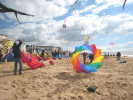
A part moi, pas mal de toile en l'air, dont un joli petit bol de Patrick l'Higuinen...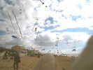
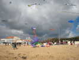
Dans les gonflables amusants, cette grande autruche a un peu de mal à tenir sur ses pattes ! Faut la monter un peu, les gars...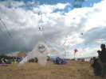
Et ce fantôme (?) pas d'une esthétique renversante, mais amusant, et qui bouge au gré du vent... Il lui faut quand même 3 ancrages différents pour se maintenir... au sol !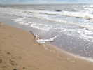
Las, mon Albatros, sans doute accroché par un autre CV, ou faute à un réglage qui a glissé, a fini par se jeter à l'eau ! Pas un temps à se baigner, alors je le ramène en tirant fort, ça chalute au fond (évidemment, il a le bec en bas) -> une petite pièce cassée et le tissu déchiré, mais on le reverra !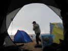
Et une bonne petite averse de grêle avec un coup de vent ! La grande tente a ses avantages, pendant que d'autres s'escriment dehors en espérant que la ficelle résistera !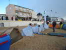
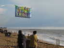
Raymond a réalisé une superbe étagère colorée, qui résiste mieux que prévu à la bonne brise.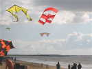
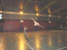
Samedi soir, dans la salle des fêtes, comme d'hab. Avant le repas, il y a plein de place pour faire de l'indoor et du temps avant le discours d'ouverture... J'ai amené mon Harfang, que je prête à un cervoliste qui faisait du papillon...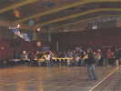
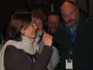
Enfin l'ouverture. La charmante dame de l'Office du Tourisme présente le contexte et remercie ceux qui ont oeuvré au festival, dont Dominique Henry et Michel Renouis...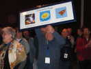
Michel reçoit un cadeau souvenir en remerciement, il est fou de joie, comme Madeleine... Merci de tout le monde, Michel !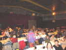
Enfin le repas, hors-d'oeuvres variés, jambon cuit aux mogettes, fromage, gâteau, nous serons bien calés pour le vol de nuit !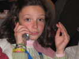
Le téléphone portable sévit maintenant à un âge de plus en plus tendre, bientôt on en offrira pour le baptême !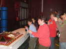
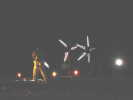
Et le vol de nuit se prépare. Mark installe ses éoliennes rapides devant les projecteurs. Au flash, on voit bien leurs réflecteurs !...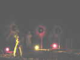
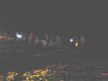
Au sol, les cervolistes se préparent, mais ne volent pas encore : au top, il y aura envol groupé...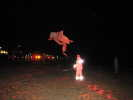
Loïk n'a pas la combinaison officielle, il a réflectorisé la sienne, ça se remarque un peu sur les photos !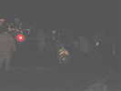
Un autre champion de la combinaison, Emmanuel Duba, avec cette... combinaison de petites pièces réfléchissantes...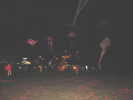
L'envol est magnifique. Malgré le vent fort, pas trop d'accrochage, il n'y a que des pros !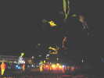
Beaucoup de cerfs-volants blancs, mais les projecteurs mettent une bonne variété de couleurs...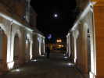
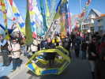
Dimanche matin, défilé traditionnel en ville, avec bannières et Batila, c'est-à-dire tambours de toutes les dimensions, qui tapent comme des fous... Les poitevins défilent non avec des bannières, mais directement avec des cerfs-volants !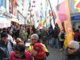
On passe dans l'étroite rue commerçante, en se serrant un peu...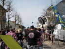
Dans la Batila, il y a des costauds qui arrivent à jouer d'une main en levant la caisse de l'autre...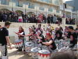
Pendant le défilé, je ne les ai vus que de dos. Mais de face, dans leurs oeuvres, c'est bien aussi...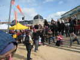
Christian a pris plein de photos à la perche, ainsi qu'un autre photographe muni d'une super-perche à télécommande etc...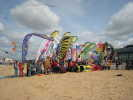
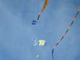
Dimanche matin, grand beau, vent un peu moins fort qu'hier ! Beaucoup de matériel en l'air, par exemple de Michel Gressier, tenu par Hugo et Audrey...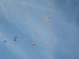
Toutes les formes, des pyrodeltas (l'excellent speaker dit "des deltas pyros"...), des Pellibox, des Brooks, le flow-form bécotisé de Christophe avec lequel il fait de la photo, pas de danger qu'il se dégonfle aujourd'hui, bien que le vent soit moins fort qu'hier !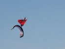
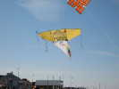
Concours de création, oriental. Jean-Marc a présenté sur un Faga très modifié le Mont Everest, le Toit du Monde...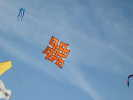
William Venant a réalisé un noeud bouddhique qui symbolise l'éternel recommencement, la sagesse, la vanité des choses de ce monde. Il est anguleux, à la différence des noeuds celtiques, tout en courbes...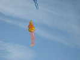
De Bernard, ce petit Ganesh, le Dieu-Eléphant indien dans cette belle réalisation dont la photo ne suffit pas à montrer la qualité...